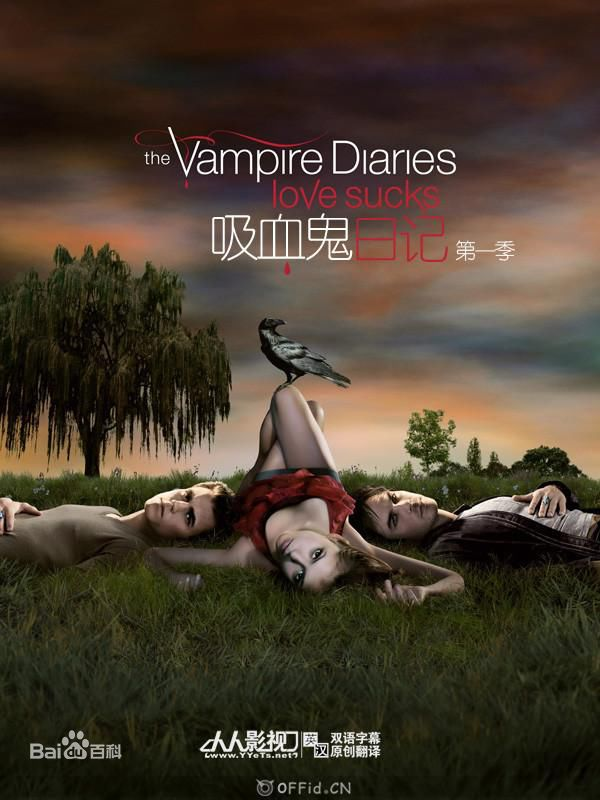

吸血鬼日记
| 第一季 |
一个17岁的弗吉尼亚少女埃琳娜，她的父母双双死于车
祸，埃琳娜是那场事故中唯一的幸存者。她的弟弟杰米里带着她搬到姑妈珍娜家借住，
他们很快就适应了新的环境。在好朋友邦妮和卡罗琳的帮助下，埃琳娜的脸上恢复了笑容，
她又变成了以前那个天真烂漫的普通少女。
四个月前的一场车祸使17岁的埃琳娜和15岁的杰米里两姐弟变成了孤儿，两人寄宿在杰娜姨妈家，
虽然杰娜看上去不近人情，但却用尽心思想做好代理父母。
曾经漂亮、聪明、人见人爱的优等生埃琳娜，如今却努力在她自己的社交圈：她在死党邦妮、
好友卡罗琳和前男友马特那儿寻求安慰；但是杰米里却成天和瘾君子混在一起，试图用毒品来逃避现实，
而马特的妹妹维姬拒绝他转投死对头泰勒的怀抱对杰米里来说更是雪上加霜。
开学后，埃琳娜和她的姐妹们对帅气神秘的新生斯特凡产生了兴趣，而斯特凡和埃琳娜也迅速坠入爱河，
尽管斯特凡诡异的行为引起了埃琳娜的怀疑，不过她没有想到斯特凡其实是一个吸血鬼。
在一个篝火晚会上维姬遭不明生物袭击，脖子上留下了骇人的啃咬痕迹，而这一切仅仅是一个开始。
而后斯特凡发现他15年未见的吸血鬼哥哥达蒙回来了。在一个世纪前，他们曾为了一个女人而反目成仇，
而埃琳娜跟那个女人有着惊人的相似，于是一正一邪的两兄弟再次为了争夺埃琳娜以及她朋友们的灵魂而展开激烈对决。
|

|
| 第二季 |
故
第二季
第二季(5张)
事紧接第一季最后一集。埃琳娜回到家中后发现叔叔John躺被凯瑟琳刺倒在血泊之中，而杰里米不省人事。
在医院里，刚刚遭遇车祸的卡罗琳正在接受抢救，马特、邦妮和达蒙一同安慰心急如焚的福布斯警长。
埃琳娜与达蒙谈起了当天晚上的种种怪事，包括他们那一吻。当埃琳娜坚决否认此事后，达蒙敏锐地意识到凯瑟琳已经回来了
。凯瑟琳的回归让斯特凡和达蒙十分担心，他们开始调查凯瑟琳的行踪，希望能查到她的真实目的。
他们都不希望凯瑟琳威胁到他们已经建立起来的「生活」。与此同时，泰勒仍在为父亲的死伤心难过。
叔叔Mason Lockwood的突然回归给了他一个惊喜。Mason打算回家料理哥哥的后事，并帮助泰勒渡过难关。
Mason已经掌握了控制狼人怒气的方法，他希望将这种方法传授给泰勒，然而泰勒却不一定能接受自己是狼人的现实。
另一方面，Mason和达蒙相处得很不愉快。尽管Mason是个好人，可他一旦被达蒙逼急了，也会做出令人震惊的事情来。
|
| 第三季 |
第三季开始的剧情不会如第二季第一
第三季
第三季(11张)
集延续第一季最后一集的内容，会从吸血鬼始祖克劳斯及相关人物介绍回顾故事发展，再转回延续第二季的内容，
并且尼克劳斯和Elijah兄弟还会回来。第三季的第一集就是女主角埃琳娜的18岁生日。这一季中埃琳娜会升到高中三年级，
但是这一季结束的时候不会毕业。随着第三季开始，泰勒和卡罗琳之间的友谊就会开花结果，迸发出爱情。
在一个清晨的早上，埃琳娜在晨跑，发现自己被人跟踪，慌乱中想甩掉这个人，却被撞个正脸，
那个男孩向埃琳娜道歉没有看到路。埃琳娜把事情告诉了邦妮觉得自己开始疑神疑鬼。
邦妮和埃琳娜讨论着一直没有克劳斯的动静，
而邦妮一直做着同一个噩梦，感到很不安。达蒙仍然像以前一样，过着纸醉金迷的生活。
在酒吧中碰上达蒙的Ric来找在酒吧打工的杰里米，
杰里米在这段时间的学习成绩很糟糕，Ric被酒吧的美女服务生告知杰里米早就被炒鱿鱼了。
此刻的杰里米正在和泰勒一起练习弩箭、
聊天。埃琳娜对杰里米的近况很担心，给杰里米打电话却无人接听。达蒙安慰埃琳娜时，
克劳斯带着另一个混血Tony来介绍给埃琳娜和达蒙认识。原来早上跟踪埃琳娜的男孩就是Tony。
克劳斯警告埃琳娜他在寻找妹妹还有斯特凡偷走了他的棺材。邦妮来到了梦中的破屋中，
发现了斯特凡偷走的棺材，斯特凡要求邦妮帮忙隐藏棺材。邦妮答应了。在另一方，埃琳娜家中
，为了泰勒和埃琳娜正在争吵。杰里米把泰勒请到了家中。克劳斯来威胁达蒙，想找到妹妹和棺材，无果。
克劳斯打来电话给杰里米。
泰勒在此时离开，埃琳娜和Ric发现杰里米脱下戒指不知所踪。
在门口看见杰里米，为救杰里米，
Ric身受重伤。原来杰里米已经被克劳斯进行了精神控制。埃琳娜又让达蒙故技重施，抹去了杰里米的记忆。
|